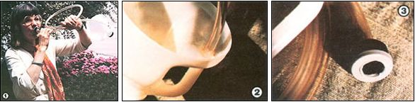

When it comes to recycling, there's no end to the ideas people can come up with. Here's . . .
It breaks my heart to think of all the waste that's constantly dumped on our poor planet. Consequently, I'm always seeking ways to divert used containers and other castoffs to new purposes. And though it may be considered tooting my own horn, I must say that I'm particularly proud of my latest achievement . . . the plastic-jug bugle.
To make the "bell" section of this madcap musical instrument, simply cut the top off a one-gallon plastic jug, just below the handle. Then, for the bugle's "throat", thread a 93" length of 1/2" (outside diameter) vinyl tubing through the handle, directing it upward from the bottom, and secure it with rubber cement or caulking. (This may look peculiar, but nobody ever said a bugle's throat has to come into the back of the bell!)
I've experimented with two kinds of mouthpiece for this homemade horn. The one shown here is made from a small plastic container that once held a roll of Kodacolor film. I simply cut a 7/16" hole through the can's bottom to accommodate the free end of the vinyl throat (make sure the tube fits snugly), and another hole in its cap. (You'll have to experiment with the size of this playing hole, however, in order to suit it to the bugler's pucker.)
A different type of mouthpiece can be made by cementing a 1/2" plastic pipe fitting, instead of the film can, on the end of the tubing . . . but while this arrangement looks more refined and is less troublesome to make, it doesn't allow for pucker variations. Bear in mind, though - regardless of which version you try - that all the connections must be airtight.
The basic pitch of my unusual noisemaker can be varied by changing the length of the tubing. In fact, if the throat is very long, you'll have - instead of a plastic bugle - a "flexible flagon" French horn.
So experiment! After all, the materials you need certainly aren't hard to come by. And who knows . . . you just might end up with the world's best "plastic jug band"!
|
 [1] The price is right on this recycled musical instrument, and it would be a welcome addition to just about any ""jug"" band. [2] The throat is inserted into the lower end of the container's handle, and the pitch can be varied by adjusting the length of the tubing. [3] A plastic film-can mouthpiece should be designed to suit the bugler's pucker |
|
|